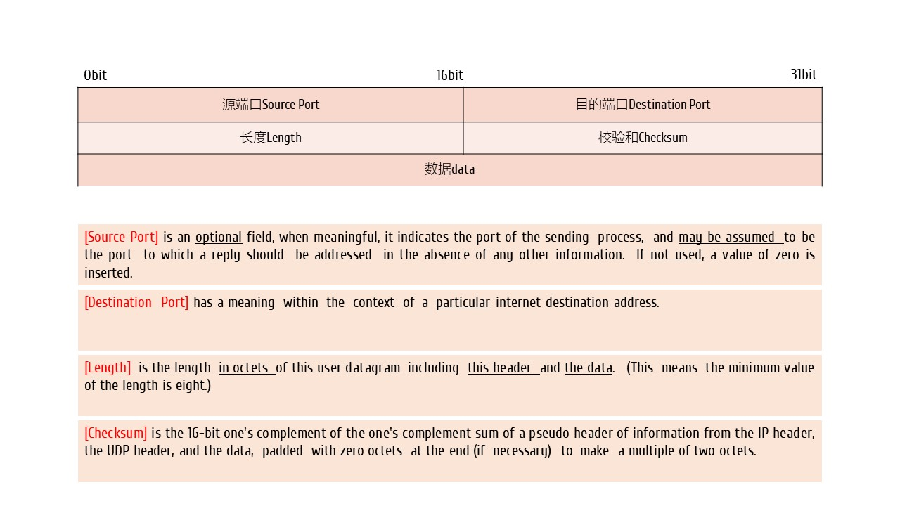
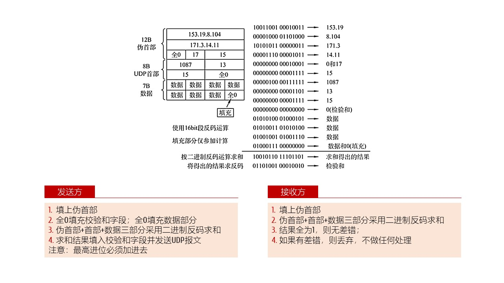
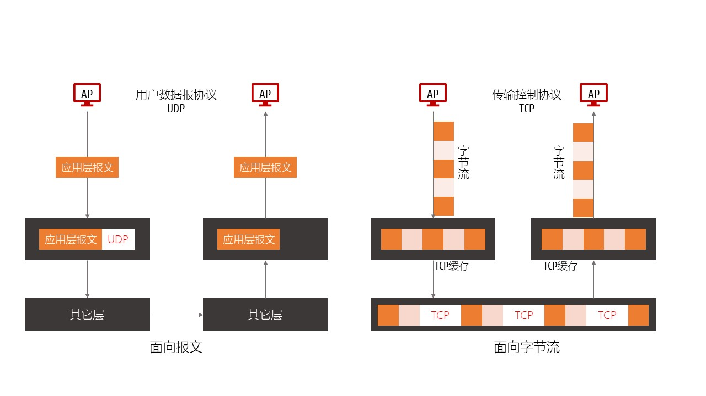

用户数据报 UDP
- UDP特点-User Datagram Protocol
- 1.无连接；最大努力交付best effort delivery；无需确认；
- 2.面向报文，不拆分；不重装；
- 3.没有流量控制、没有拥塞控制；
- 4.首部开销小，8个字节
- 5.支持组播、多播；用用于实时通信；
- 6.更多信息，请参考RFC 768
- UDP报文

- UDP校验和

- UDP TCP对比1

- UDP TCP 对比2



